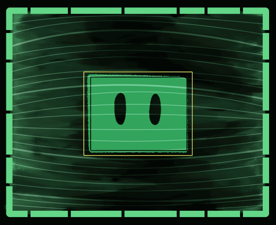

HIRB AI
Hello

I'm HIRB!
Hyper-Information-Reserve-Base
HIRB is an AI program that preserves information
from HabTech research center, while also able
to comprehend and process the Earth's own
natural occurances.